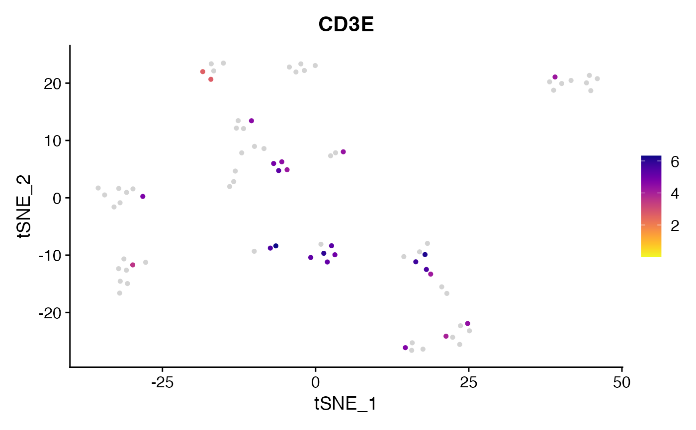

Create Custom FeaturePlots and preserve scale (no binning)
FeaturePlot_scCustom(
seurat_object,
features,
colors_use = viridis_plasma_dark_high,
na_color = "lightgray",
order = TRUE,
pt.size = NULL,
reduction = NULL,
na_cutoff = 1e-09,
raster = NULL,
raster.dpi = c(512, 512),
split.by = NULL,
split_collect = NULL,
aspect_ratio = NULL,
figure_plot = FALSE,
num_columns = NULL,
slot = deprecated(),
layer = "data",
alpha_exp = NULL,
alpha_na_exp = NULL,
label = FALSE,
label_feature_yaxis = FALSE,
combine = TRUE,
...
)Arguments
- seurat_object
Seurat object name.
- features
Feature(s) to plot.
- colors_use
list of colors or color palette to use.
- na_color
color to use for points below lower limit.
- order
whether to move positive cells to the top (default = TRUE).
- pt.size
Adjust point size for plotting.
- reduction
Dimensionality Reduction to use (if NULL then defaults to Object default).
- na_cutoff
Value to use as minimum expression cutoff. This will be lowest value plotted use palette provided to
colors_use. Leave as default value to plot only positive non-zero values using color scale and zero/negative values as NA. To plot all values using color palette set toNA.- raster
Convert points to raster format. Default is NULL which will rasterize by default if greater than 200,000 cells.
- raster.dpi
Pixel resolution for rasterized plots, passed to geom_scattermore(). Default is c(512, 512).
- split.by
Variable in
@meta.datato split the plot by.- split_collect
logical, whether to collect the legends/guides when plotting with
split.by. Default is TRUE if one value is provided tofeaturesotherwise is set to FALSE.- aspect_ratio
Control the aspect ratio (y:x axes ratio length). Must be numeric value; Default is NULL.
- figure_plot
logical. Whether to remove the axes and plot with legend on left of plot denoting axes labels. (Default is FALSE). Requires
split_seurat = TRUE.- num_columns
Number of columns in plot layout.
- slot
![[Deprecated]](figures/lifecycle-deprecated.svg) soft-deprecated. See
soft-deprecated. See layer- layer
Which layer to pull expression data from? Default is "data".
- alpha_exp
new alpha level to apply to expressing cell color palette (
colors_use). Must be value between 0-1.- alpha_na_exp
new alpha level to apply to non-expressing cell color palette (
na_color). Must be value between 0-1.- label
logical, whether to label the clusters. Default is FALSE.
- label_feature_yaxis
logical, whether to place feature labels on secondary y-axis as opposed to above legend key. Default is FALSE. When setting
label_feature_yaxis = TRUEthe number of columns in plot output will automatically be set to the number of levels insplit.by'- combine
Combine plots into a single
patchworkedggplot object. If FALSE, return a list of ggplot objects.- ...
Extra parameters passed to
FeaturePlot.
Value
A ggplot object
Examples
library(Seurat)
FeaturePlot_scCustom(seurat_object = pbmc_small, features = "CD3E",
colors_use = viridis_plasma_dark_high, na_color = "lightgray")
#>
#> NOTE: FeaturePlot_scCustom uses a specified `na_cutoff` when plotting to
#> color cells with no expression as background color separate from color scale.
#> Please ensure `na_cutoff` value is appropriate for feature being plotted.
#> Default setting is appropriate for use when plotting from 'RNA' assay.
#> When `na_cutoff` not appropriate (e.g., module scores) set to NULL to
#> plot all cells in gradient color palette.
#>
#> -----This message will be shown once per session.-----
